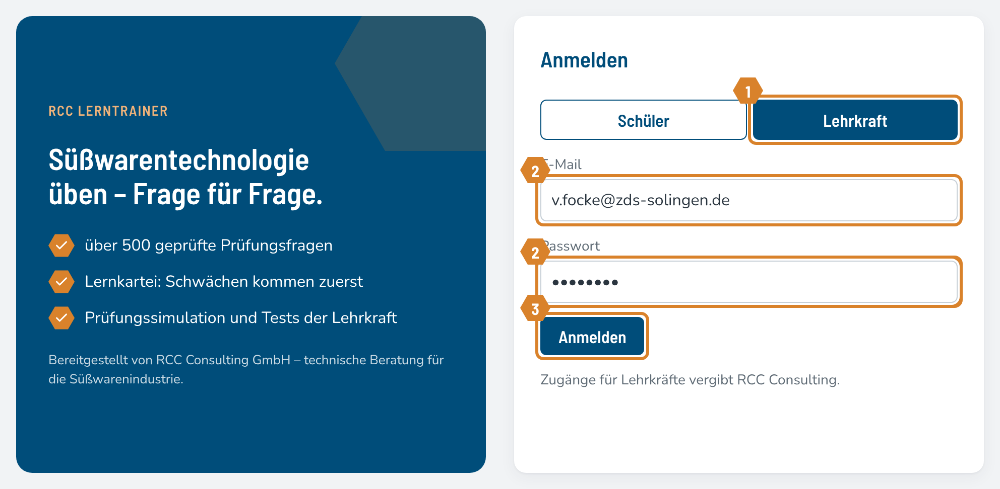
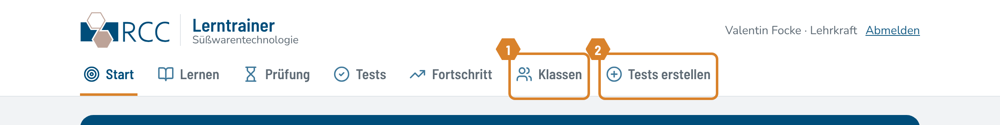

LerntrainerAnleitung für Lehrkräfte
Für Lehrkräfte
So arbeiten Sie mit dem Lerntrainer
Über 500 programmierte Prüfungsfragen (Multiple Choice, A–E) zur Süßwarentechnologie. Schüler lernen selbstständig am Handy oder PC; Sie legen Klassen an, stellen Kurztests zusammen und sehen die Ergebnisse. Die orangefarbenen Nummern in den Bildern zeigen, wo Sie klicken.
Adresse: · Ihr Zugang: E-Mail und Passwort erhalten Sie von RCC Consulting. Läuft im Browser, keine Installation nötig.
1
Anmelden

- 1Reiter Lehrkraft wählen.
- 2E-Mail und Passwort eingeben.
- 3Anmelden klicken.
2
Ihre zusätzlichen Bereiche

- 1Klassen – Klassen anlegen, Schüler einladen, Fortschritt, PIN zurücksetzen.
- 2Tests erstellen – Kurztests zusammenstellen und auswerten.
Lernen, Prüfung, Tests und Fortschritt sehen Sie genauso wie Ihre Schüler – zum Ausprobieren.
Bereitgestellt von RCC Consulting GmbH · technische Beratung für die SüßwarenindustrieSeite 1 von 4